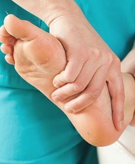

Allied Health
Execrise Physiology
Manage your health condition/s in a safe, friendly and socially connected environment, regardless of age or disability.
Our exercise clinic is staffed with experienced Accredited Exercise Physiologists to ensure a high quality of supervision and service.

Podiatry & Audiology
adipiscing vitae
Healthy feet allow you to be active which has numerous benefits such as keeping weight off; maintaining and improving muscle and bone strength; and improving emotional and mental health.
Good hearing results in positive health outcomes, increased social engagement, improves communication and lowers the risk of depression. Take the first step to healthy hearing by getting your hearing checked at Burnie Brae through Hear Better Hearing Clinic.

Care services
Help in your home
Burnie Brae Home Maintenance Service provides subsidised assistance for essential maintenance and repairs for eligible clients who are 60 years and older or younger people with a disability who are living in their own home. For eligible clients, work is undertaken by Burnie Brae staff or approved contractors.